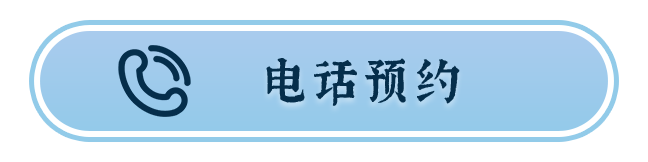
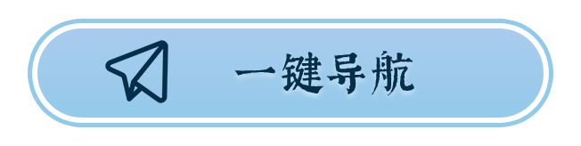
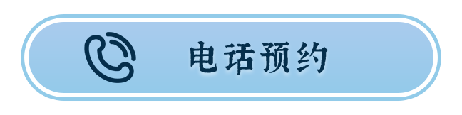
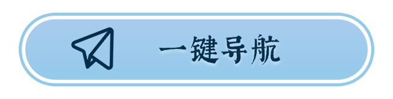
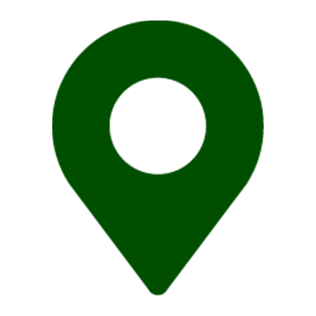

汕头侨批文物馆

地址
汕头侨批文物馆是国内首家以侨批为主题的文物馆，致力于征集、收藏海内外侨批及相关文献、档案等实物及电子版资料，运用大量的侨批文物，揭示侨批的产生和侨批业发展的过程，彰显侨批对潮汕经济社会的贡献，展现华侨华人的移民史、创业史以及潮人勇于开拓、守信重义、爱国爱乡的精神。2020年10月13日，习近平总书记到汕头考察调研，亲临侨批文物馆，了解潮汕侨胞心系家国故土、支持祖国和家乡建设的历史，并作出有关保护好侨批文物的重要指示。

开放时间
周二至周日每天9:00-17:00（16:30观众停止进场）；周一闭馆（法定节假日除外）